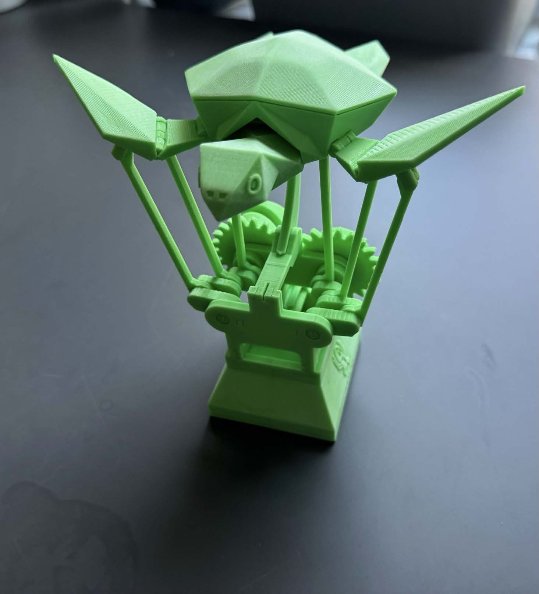
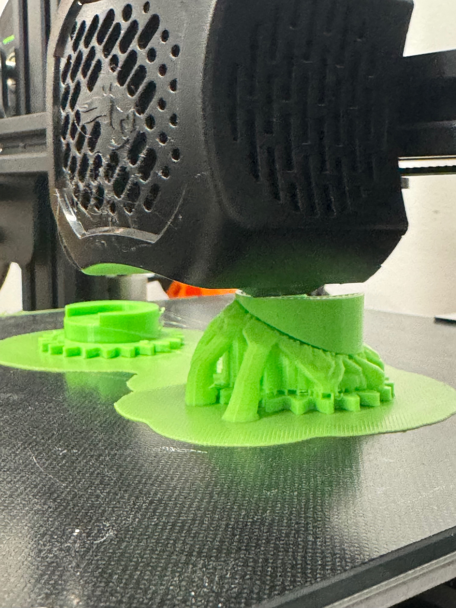
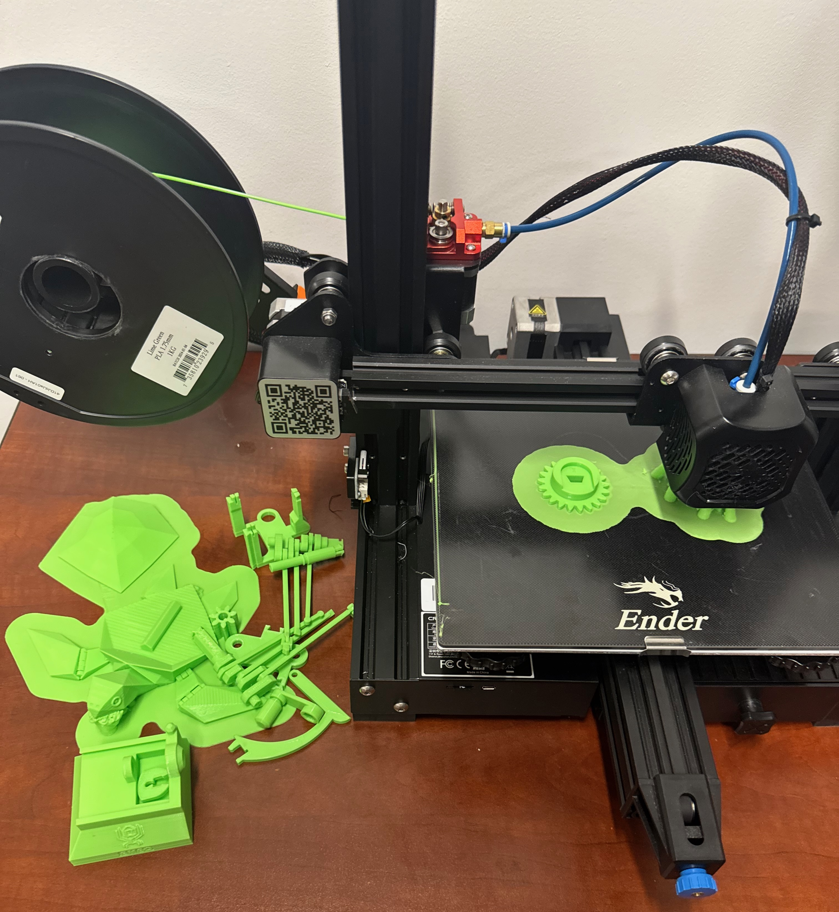
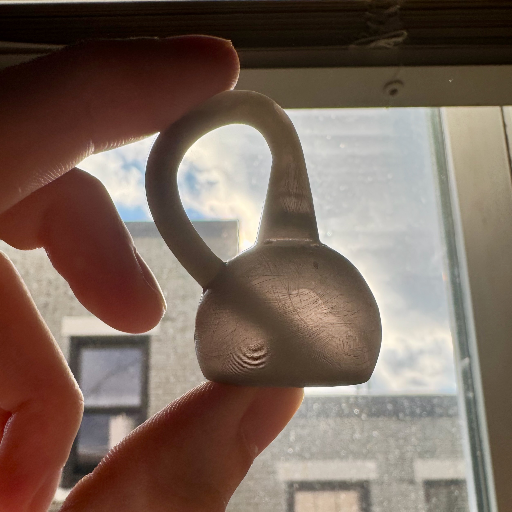
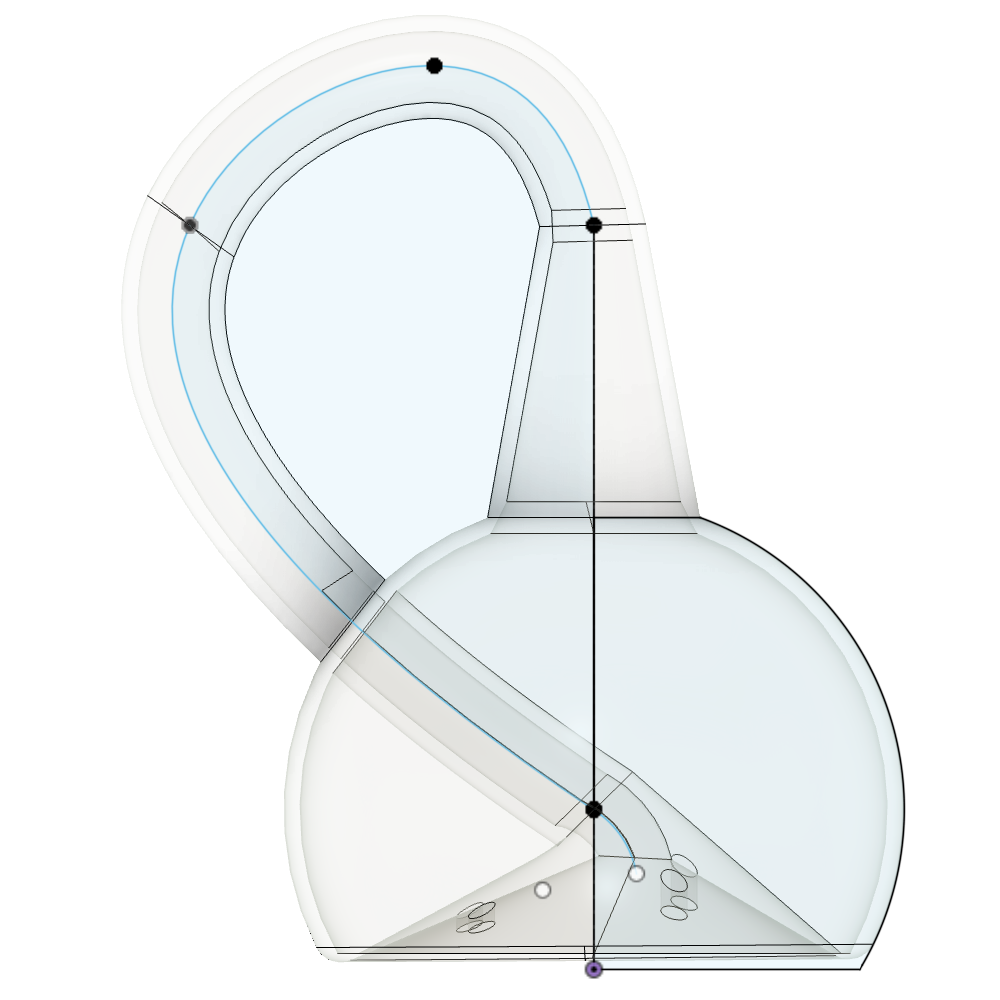
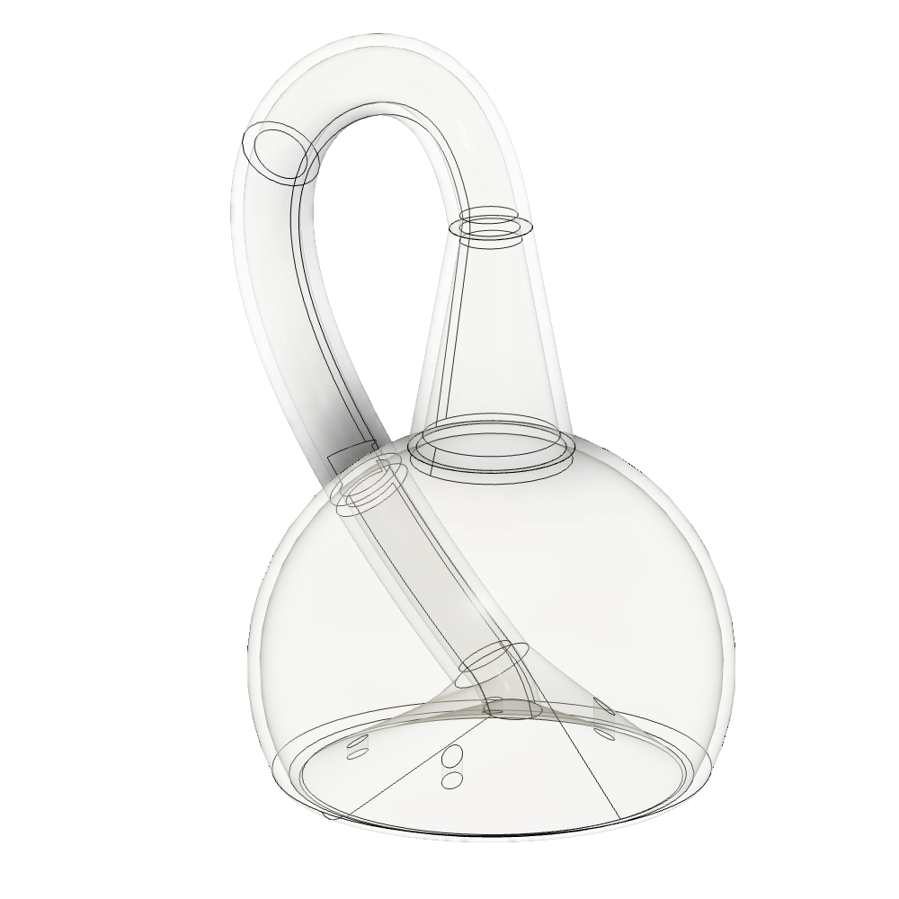
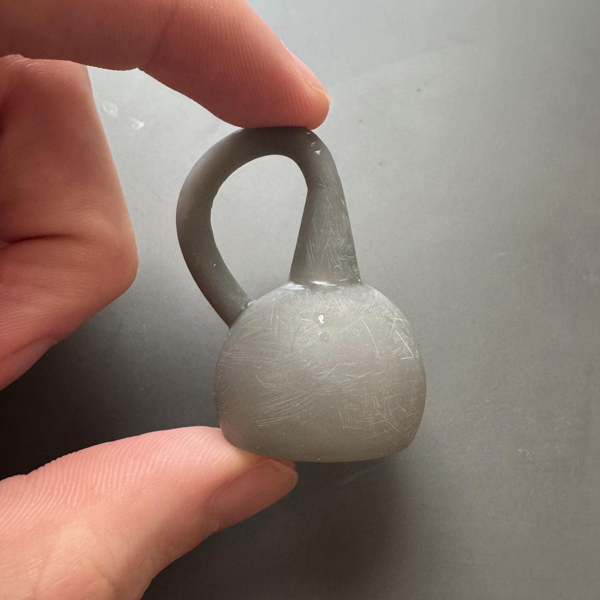
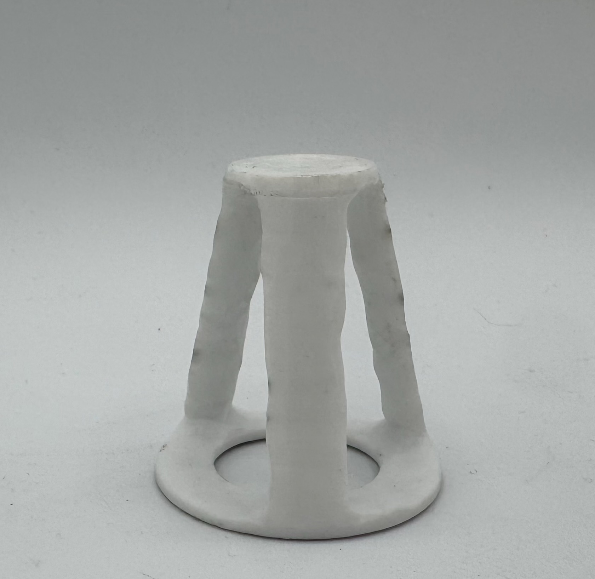

Additive Manufacturing Projects
FFF and SLA prints exploring print strategy, assembly, tolerancing, and functional behavior.
Flying Sea Turtle — FFF Print & Assembly
Multi-part print produced on a Creality Ender-3 FFF printer, focusing on print setup, tolerancing, and post-print assembly rather than original part design.
Design credit: amaochan.work — original STL design. My contribution focused on fabrication, printer tuning, and successful operation.



Technical notes
What I tuned on the Ender + what changed print-to-print.
What I focused on
- Print orientation and layer direction for joint strength
- Support strategy and surface finish tradeoffs
- Post-print cleanup and assembly sequencing
- Tolerance behavior of moving printed joints
Outcome
Successfully printed and assembled the mechanism with smooth wing motion, demonstrating reliable articulation on a consumer-grade FFF printer without redesigning the STL.
Klein Bottle — SLA Design & Print
SLA-printed Klein bottle designed to fit within the ME557 size constraints and highlight an internal geometry not possible with subtractive manufacturing. Printed in Formlabs Draft Grey Resin using a Formlabs Form3 printer.




Technical notes
Design intent, print strategy, and post-processing decisions.
What I focused on
- Geometry planning to make the internal feature visible in the print
- Support strategy and surface finish (minimize scarring on key surfaces)
- Post-processing: wash/cure and cleanup without damaging thin sections
Outcome
Successful SLA print with the internal channel clearly visible using backlighting, plus a solid exterior finish after cleanup and post-cure.
Mass–Performance Structure — FFF Design, Print & Compression Test
Designed and printed a lightweight structure to meet the course compression requirement and verified performance under load. Printed in PETG and withstood 2000 N.

Final PETG structure (pre-test).


What I focused on
- Meeting top/bottom contact geometry while resisting buckling
- Layer direction choices for compressive strength and stability
- Balancing mass vs stiffness (material where it matters)
Outcome
Passed the compression target at 2 kN in PETG while staying above the height threshold during loading.